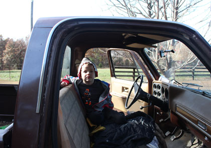
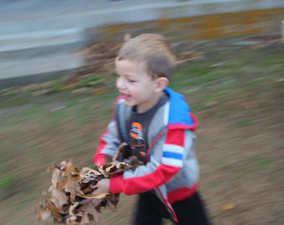
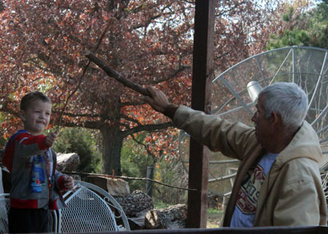
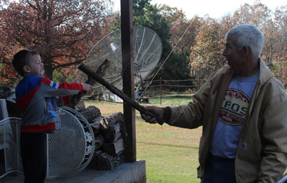
Fierce stick battle on the porch.
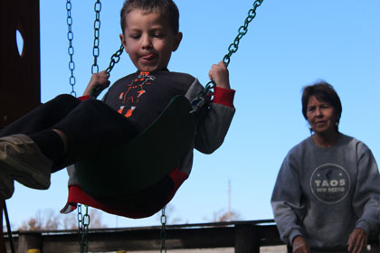
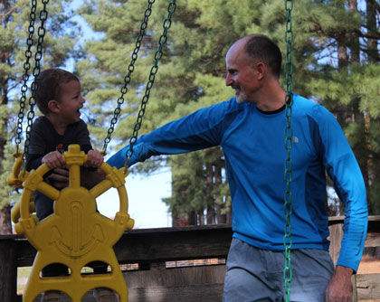
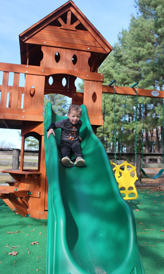
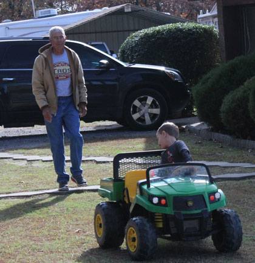
does that all the time. He's an amazing driver.
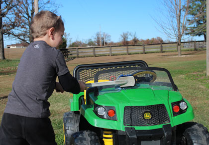
All visits to Westville start with a washing of the Gator. It must be clean.
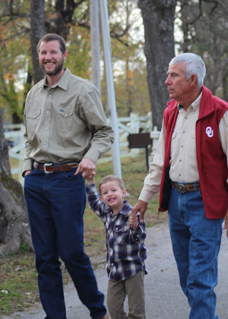
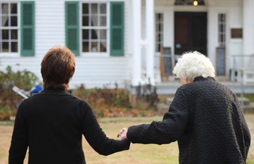
Mom helping Gran as we move to the side of the Murrell Home
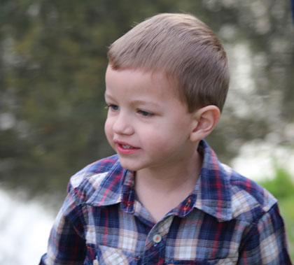
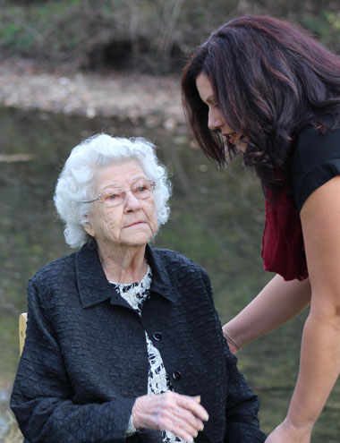
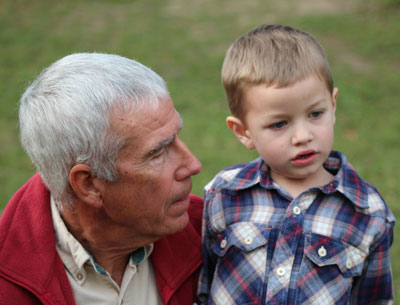
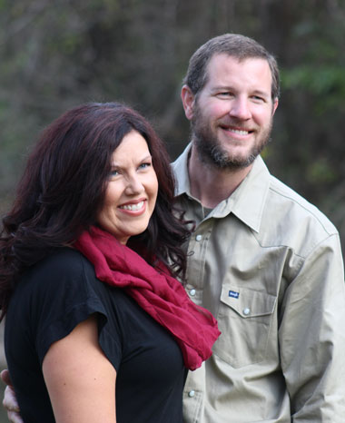
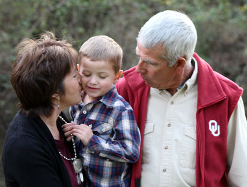
These shots are some candids I took while the real
photographer was doing her thing.
Her great pictures are included at the bottom of this page.
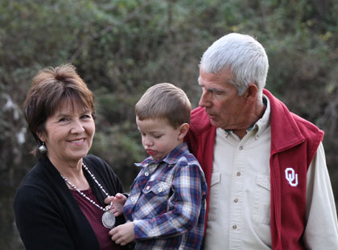
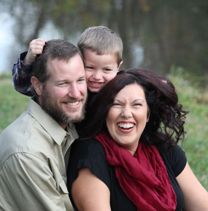
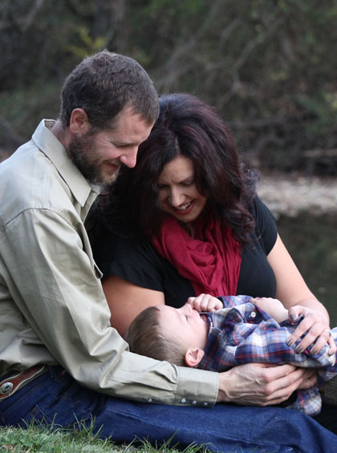
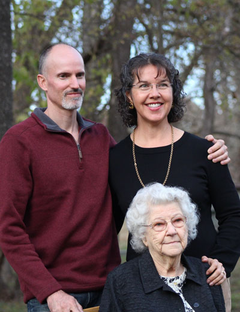
Mom or Desirae shot this for us, which I appreciated greatly.
We love our Gran.
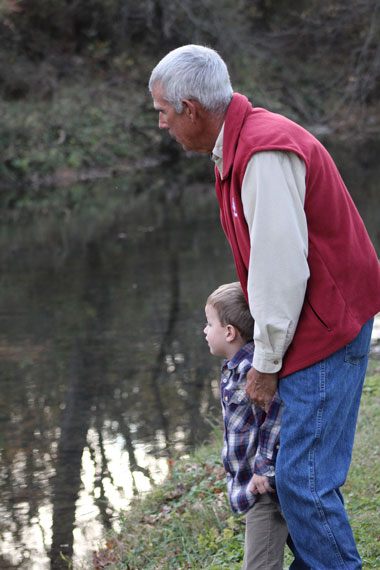
Dad hopes to keep Brodie clean for the duration of the photo shoot
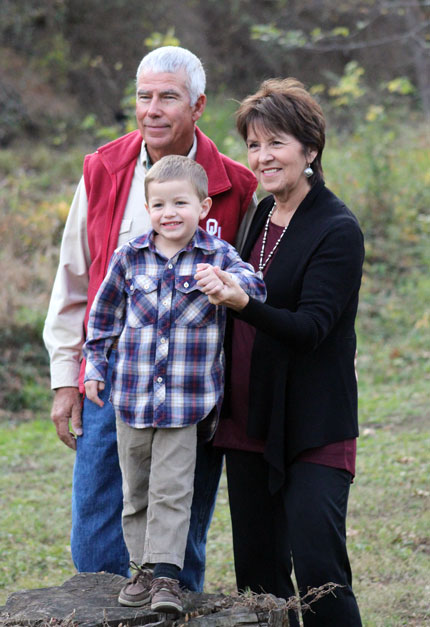
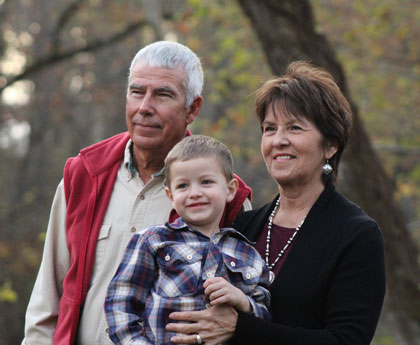
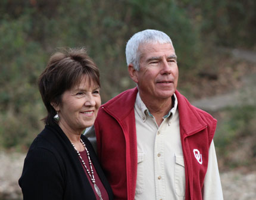
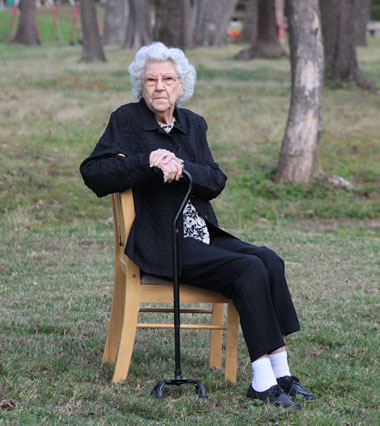
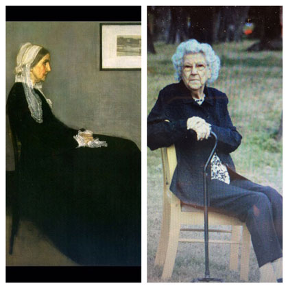
When we saw this picture of Gran my Mom said, "Whistler's Mother."
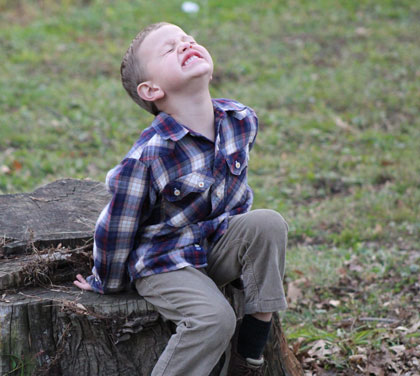
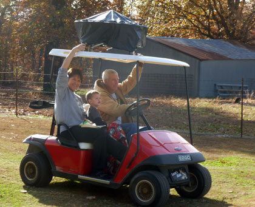
pit to the front yard in a creative way. They are creative problem solvers.
As promised - professional family photographs.
They turned out great.
Especially considering the challenges we threw at her!
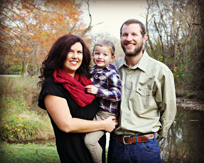
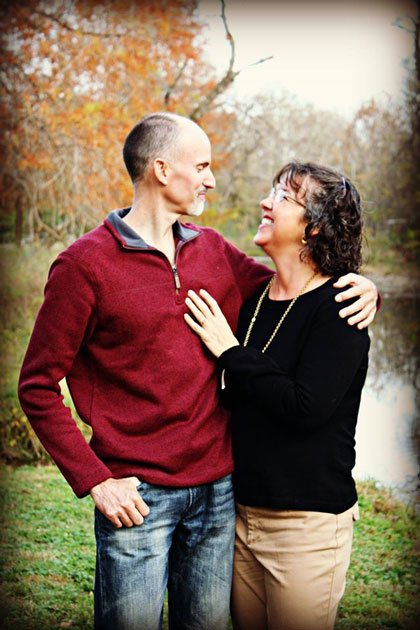
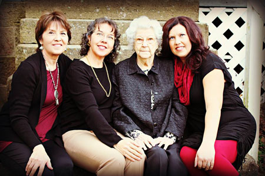
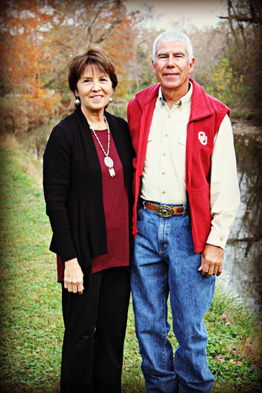
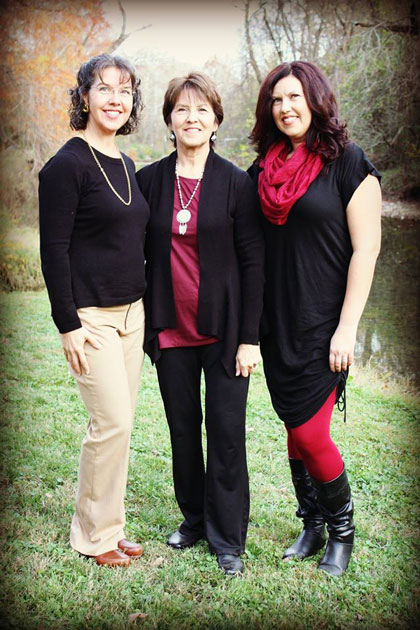
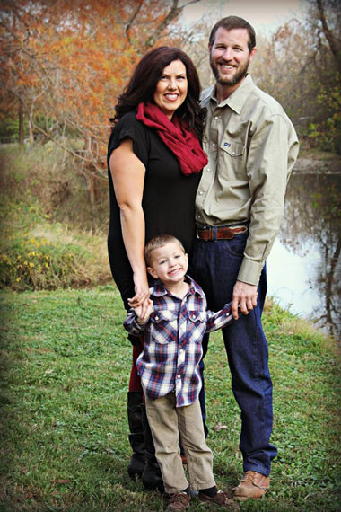

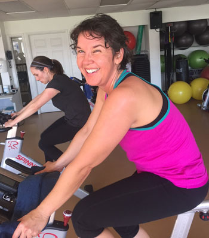
Markoma gym, the Cherokee Nation gym in Tahlequah.